基于差分帧 ROM 存内计算（CiM）的大面积应用传感内计算跨层探索与芯片演示
该论文针对薄膜晶体管（TFT）技术在大面积柔性传感中器件性能低、D2D/C2C 变异严重、TFT 与 CMOS 芯片间接口传输代价高的问题，提出一套传感内计算（in-sensor computing）架构。方法上采用紧凑 1T ROM 存内计算（CiM）阵列在传感阵列旁以超高密度实现神经网络第一层的高并行模拟域 MAC 计算；提出差分帧（diff-frame）计算，通过相邻两帧计算结果相减在公式层面消去 Vth 项，无需额外补偿结构即获得对器件变异与 BTI 的鲁棒性；并借鉴人眼 Weber 定律设计带残差恢复缓存（residual recovery cache）与 zero-skip 移位寄存器的数据压缩方法，在不累积误差的前提下提升输出稀疏性。团队流片了 4μm LTPS TFT 芯片（3×5 个 32×128 单元的 ROM CiM 阵列），系统级评估显示相对传感器与处理器分离的传统架构获得 3.85× 加速与 5.10× 能效提升，压缩方法在 STAG/HAART 数据集上以小于 1% 精度损失将稀疏性提升超过 50%。
TFT 薄膜技术虽能支撑大面积柔性传感集成（医疗监测、e-skin、大面积触觉感知等），但器件 on-state 电流低、双极集成困难、D2D/C2C 变异大，且 TFT 传感芯片与 CMOS 处理器之间的接口传输耗时耗能；同时通用 NN 的中间特征图往往大于输入数据，进一步加剧传输开销。现有 in-sensor computing 工作未考虑大面积属性，难以直接迁移到薄膜技术场景。
提出 TFT 基传感内计算架构，含三个核心模块：(1) 近传感 ROM-based CiM 阵列：用 1T ROM 单元（栅极接 WL 或 gnd 表示二值权重）以超高密度实现 NN 第一层的模拟域 MAC，通过复制多阵列与扩展 2D 读出 kernel 提升并行度；(2) 差分帧计算模块：用两个 1T1C DRAM 单元交替缓存相邻帧计算结果并串联相减，配合 Vth 校准的 source follower，使 Vth 项在差分输出中被消去，从而免疫高器件变异与 BTI；(3) 仿生数据压缩模块：依据 Weber 定律对差分帧数据做阈值剪枝，用双 eDRAM 单元构成的残差恢复缓存将剪除残差累加到下一帧避免误差累积，传输前用 zero-skip 移位寄存器跳过零输出；并配合跨层设计空间探索，对读出 kernel 尺寸、输出通道数与面积开销做约束建模与 Pareto 前沿分析。
流片 4μm LTPS TFT 芯片：3×5 个 ROM CiM 阵列，每个阵列含 32×128 单元，1T 单元面积 30×30 μm²；实测验证了计算高线性度
在 σVth=0.3V、σμ0/μ0=2% 及 TFT BTI 模型下，diff-frame 计算将输出变异降低超过一个数量级，而传统 CiM 方案难以产生正确结果
系统级评估：相对传感器/存储/处理器分离的基线架构，平均获得 3.85× 加速与 5.10× 能效提升
STAG 数据集上软件/硬件实现精度分别为 76.58% 与 75.24%；压缩方法以 <1% 精度损失将稀疏性在 STAG 与 HAART 上提升超过 50%，在更难的 UCF-101 上仍提升超过 15%
设计空间探索显示 ROM CiM 凭借超高存储密度，在并行度-面积开销 Pareto 前沿上优于其他 CiM 技术
基线处理器采用 65nm TSMC 工艺由 Synopsys Design Compiler 综合评估
相对已有工作的区别：(1) 已有 in-sensor computing 工作多基于 CMOS 或未考虑大面积属性，本工作面向大面积薄膜技术做跨层设计并完成芯片实测验证；(2) 已有 diff-frame 处理器工作聚焦处理器侧架构，本工作设计了传感器侧的 diff-frame 生成与预处理电路，且无需额外 Vth 补偿结构即可实现鲁棒计算；(3) 已有压缩感知类工作放弃高并行计算且需额外解码，本工作同时支持 in-sensor 处理与数据压缩，残差恢复机制避免了直接剪枝导致的累积误差。
相关度级别：low
命中能力域：无明显对应
理由：论文核心是 TFT 模拟域存内计算与传感侧混合信号电路创新，属于传感器/柔性电子领域，与本团队 LPDDR/HBM/UCIe 等数字内存与互连 IP 的架构、RTL、验证职责无实质交集：论文未涉及可综合 RTL 设计（仅基线处理器用 Design Compiler 综合）、无 UVM/覆盖率/形式验证内容、无仿真加速或 Emulation/FPGA 原型平台；其 CiM 为 TFT 模拟 ROM 结构，并非团队关注的数字存储接口或先进 CMOS 数字 CiM 技术。跨层设计空间探索与 Pareto 权衡方法仅具一般性方法学参考价值，不构成对七个能力域的直接命中。
建议动作：暂不相关
Jialong Liu 1，Wenjun Tang 1，Deyun Chen 1,2，Chen Jiang 1，Huazhong Yang 1 和 Xueqing Li 1
1：清华大学电子工程系，北京信息科学与技术国家研究中心（BNRist），中国北京
2：清华大学深圳国际研究生院先进传感器与集成系统重点实验室
{liujl19,twj21,chendy22}@mails.tsinghua.edu.cn，{chenjiang,yanghz,xueqingli}@tsinghua.edu.cn
传感器内计算（in-sensor computing）已成为一种颇具前景的方法，可用于缓解传感器与处理单元之间巨大的数据传输开销。近年来，新兴的应用场景对传感技术在大面积与柔性集成方面提出了更多需求。然而，对于能够提供柔性与大面积集成支持的薄膜技术而言，由于器件性能较低、大面积集成存在变异，以及传感器与CMOS处理器之间接口成本高昂，传感器内计算的实现会受到严重制约。为应对这一挑战，我们提出了一种传感器内计算架构，以支持高并行度的神经网络（NN）预处理和有效的数据压缩。通过在传感阵列旁采用紧凑的基于只读存储器（ROM）的存内计算（CiM）方案，拓展了计算并行度的边界。差分帧计算不仅提供了出色的鲁棒性，还带来了高数据稀疏性。一种受生物启发的数据压缩方法，借助残差恢复缓存（residual recovery cache）与零跳过（zero-skip）电路，在不引入累积误差的情况下进一步提升了输出稀疏性。基于所提出的跨层设计优化，我们已流片并实验测量了一颗基于低温多晶硅薄膜晶体管（LTPS TFT）的ROM CiM芯片。系统级评估表明，与传感器和处理器分离的传统架构相比，该设计实现了3.85倍加速和5.10倍能效提升，在大面积薄膜技术场景下优于现有的传感器内计算工作。
存内计算，传感器内计算，薄膜晶体管
Jialong Liu 1 、Wenjun Tang 1 、Deyun Chen 1,2 、Chen Jiang 1 、Huazhong Yang 1 和 Xueqing Li 1 。2024。面向大面积应用的基于差分帧ROM存内计算的传感器内计算的跨层探索与芯片演示。载于第61届ACM/IEEE设计自动化会议（DAC '24），2024年6月23日至27日，美国加利福尼亚州旧金山。ACM，美国纽约州纽约，6页。https://doi.org/10.1145/3649329.3657324
特此许可免费制作本作品部分或全部内容的数字或硬拷贝副本，供个人或课堂使用，前提是此类副本的制作或分发不得以营利或商业利益为目的，且副本首页须带有本声明及完整的引用信息。本作品中第三方组件的版权必须予以尊重。对于所有其他用途，请联系所有者/作者。
© 2024 版权归所有者/作者所有。
ACM ISBN 979-8-4007-0601-1/24/06。
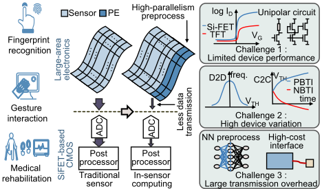
通过将存内计算（in-memory computing）[5-7]的类似概念引入传感器，新兴的传感器内计算（in-sensor computing）同样在智能感知任务中展现出其潜力 [4, 8-14]。最近，一系列智能感知工作 [8-10] 已验证了采用传感器内计算来加速神经网络（NNs）前几层的可行性。尽管这些令人鼓舞的工作展示了传感器内计算的巨大潜力，但由于薄膜技术中必要操作的成本要高得多，将这些工作直接移植到大面积感知场景中可能并不可行。此外，这些工作并未考虑大面积这一属性，而这或许能带来突破传感器内计算并行度极限的机会。
作为大面积感知与显示产业基础的薄膜晶体管（TFT）器件，正成为实现大面积传感器内计算的理想候选 [15]。远超传统的感知与显示应用，近期研究已展示了 TFT 器件在处理器 [16]、低功耗长保持存储器 [17] 以及多功能模拟电路 [18] 方面的新技术路径。这些工作证明，尽管 TFT 性能相对较低且器件差异较大，其仍能实现互补金属氧化物半导体（CMOS）电路的全部功能。此外，还有若干基于 TFT 的工作致力于传感器内预处理 [11, 12] 和数据压缩 [13, 14]。尽管这些工作大多处于仅具备简单功能的早期研究阶段，但它们已展现出大面积传感器内计算范式的巨大潜力。
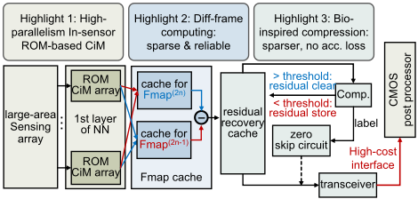
然而，在大多数神经网络架构中，中间特征图的尺寸大于输入数据 [4]。由于 TFT 芯片与 CMOS 芯片之间的接口十分耗时且耗能，这种数据传输开销变得不可接受 [10]。另一方面，面向压缩感知的工作则放弃了高并行度计算的优势，并且需要额外的解码过程 [13, 14]。
针对预处理与数据压缩这一两难困境，一种可行的解决方案是进行差分帧（diff-frame）稀疏计算，以降低卷积神经网络（CNN）连续推理的计算预算。卷积层的计算过程可表示为式 (1)：
其中 ∗ 表示二维卷积运算。若采用差分帧运算，则输出可重写为式 (2)：
采用差分帧输入时，通过执行 𝜔 ∗ 𝛿𝑥 即可计算出差分帧特征。对该特征进行累加，即可等效地得到常规 CNN 的计算结果。该方法受益于差分帧输入更高的稀疏性，且不引入任何数学近似，已被多项工作[19-21]用于加速 CNN。
现有的差分帧处理器工作已经展示了从传感器传输差分帧数据的潜力。然而，这些工作主要聚焦于处理器侧的架构设计。为了生成并预处理差分帧数据，传感器侧的架构则需要经过精心设计。
本文提出的基于薄膜晶体管（TFT）的传感器内计算架构如图2所示。该架构由一个大面积传感阵列和三个重点模块组成：近传感器基于ROM的存内计算（CiM）阵列、差分帧计算模块以及仿生压缩模块。来自传感器的原始数据将依次流经这些模块，此后仅有经过处理和压缩的数据会通过连接TFT芯片与CMOS芯片的高成本信号通道进行传输。高效的预处理与数据压缩改善了智能感知系统的延迟与能效表现。这三个重点模块的详细描述分别见第3.1、3.2和3.3节。
采用差分帧ROM存内计算的……跨层探索与芯片演示
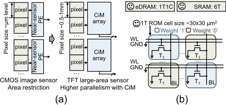
TFT 器件的高 𝑉 𝑡ℎ 变化成为在模拟领域实现可靠存内计算的最大挑战。尽管已有许多补偿 𝑉 𝑡ℎ 变化的解决方案 [23]，但对 ROM CiM 单元而言，在不引入此类额外结构的前提下保持紧凑至关重要。
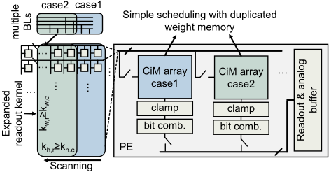
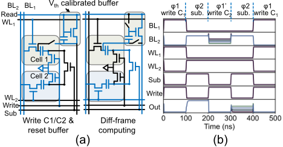
我们提出了一种差分帧（diff-frame）计算方法，无需额外结构即可实现高鲁棒性。差分帧计算将连续两帧的计算结果相减，差分输出可写为 (4)：
经过差分帧计算后，输出电流表示差分输入与权重的乘积。此外，公式中含 𝑉 𝑡ℎ 的项被消除，这意味着高器件变化和严重 BTI 效应的影响可以得到显著降低。
差分帧计算由专门设计的缓存实现，该缓存由两个 1T1C DRAM 单元（C1 和 C2）和一个经过 𝑉 𝑡ℎ 校准的源极跟随器组成，如图 5(a) 所示。一帧的处理结果交替存储在 C1 和 C2 中。当处理一帧时，开关 T3 导通并将两个电容串联连接，从而实现差分帧计算。BL2 被设置为高电压，以确保输出源极跟随器工作在正确的区域。𝑉 𝑡ℎ 校准结构可以在 C1 和 C2 的写入阶段进行复位，而无需占用额外的时钟周期。仿真波形如图 5(b) 所示。
差分帧数据的稀疏度通常低于 40%，无法直接用于优化数据传输。然而，直接将小数据剪枝为零会造成严重的累积误差。这一困境给输出数据的进一步压缩带来了挑战。
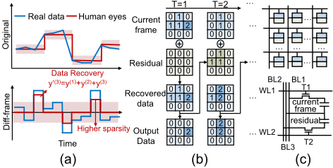
受人类眼睛机制的启发，我们实现了一种数据压缩方法来提升差分帧数据的稀疏度。该机制由韦伯定律（Weber's law）总结得出（如图 6(a) 所示），描述了人眼的滤波功能 [24]。该定律表明，忽略轻微的波动不会影响视觉信息的采集。将视角从原始输入数据转换到差分帧数据上，该定律说明：如果所引入的误差能够在后续帧中得到恢复，那么对低于某一阈值的差分帧数据进行剪枝是可行的。因此，所提出的方法通过保留被剪枝的数据（即残差）并将其累加到下一帧中来模仿这一过程，如图 6(b) 所示。
残差恢复通过专门设计的缓存实现，如图 6(c) 所示。所提出的缓存单元由两个嵌入式 DRAM（eDRAM）单元组成，用于同时存储当前差分帧数据和残差。第三条 BL 连接到公共节点。在将数据读入传输模块时，BL3 被置为浮空，从而将两个单元组合起来，直接读出差分帧数据与残差之和。在最终传输之前，采用带旁路支路的跳零移位寄存器（zero-skip shift register）[25] 来跳过非预期输出，而不消耗时钟周期。
我们制造了由 3×5 个基于 ROM 的存内计算（CiM）阵列构成的大面积低温多晶硅（LTPS）薄膜晶体管（TFT）芯片，每个 CiM 阵列包含 32×128 个单元。30×30 𝜇𝑚 2 的 1T ROM CiM 单元配合 4 𝜇𝑚 LTPS 工艺实现了超高存储密度。芯片与测试平台如图 7(a)(b) 所示。为追求高能效，所提出的 TFT ROM CiM 采用 BL 放电方案，以低工作电压感测 CiM 输出电流，这对基于 TFT 的控制电路十分友好。在芯片测量中，输入电压被设置为 2.4V 至 3.0V 的范围以确保高线性度，而输出 BL 的预充电电压为 1V。测量结果如图 7(c)(d)(e) 所示，展现出高计算线性度，验证了基于 TFT 的 ROM CiM 方案的可行性。
基于对 TFT ROM CiM 阵列的测量，提取了器件模型并将其用于进一步的电路级与系统级仿真。通过从测量结果中提取参数。
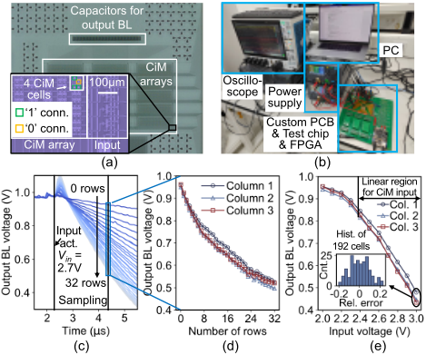
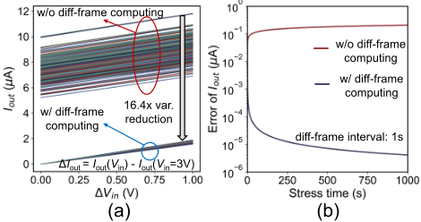
图 8 描述了差分帧计算模块在 D2D 与 C2C 𝑉 𝑡ℎ 变化下的蒙特卡洛仿真结果。根据测量结果，𝜎 𝑉 𝑡ℎ 被设置为 0.3V，同时还考虑了 𝜎 𝜇 0 / 𝜇 0 = 2% 的器件迁移率变化。采用面向 TFT 的偏置温度不稳定（BTI）模型 [26] 来评估 C2C 变化。在如此高的器件变化下，不含差分帧计算的传统 CiM 方案几乎无法产生正确结果。相反，差分帧计算几乎消除了 𝑉 𝑡ℎ 变化的影响，通过将输出变化降低超过一个数量级，实现了高精度计算。
Design Space Exploration : We assume the size of readout kernel and convolution kernel to be 𝑘 ℎ,𝑟 × 𝑘 𝑤,𝑟 and 𝑘 ℎ,𝑐 × 𝑘 𝑤,𝑐 , respectively. The output channel and weight precision of the first layer are set to be 𝑐 𝑜 and 𝑏 bits. The PE is required to be placed within the width of 𝑘 𝑤,𝑟 - 𝑘 𝑤,𝑐 + 1 rows to generate outputs in one-shot. This restriction can be described by (5):
Cross-Layer Exploration and Chip Demonstration of ... with Differential-Frame ROM-Based Compute-In-Memory
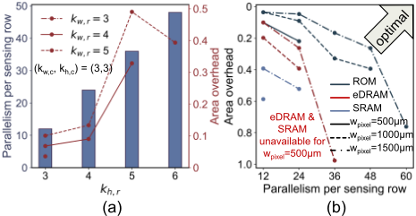
where 𝑤 𝑝𝑖𝑥𝑒𝑙 , 𝑤 𝑅𝑂𝑀 , 𝑤 𝑝𝑒𝑟𝑖 and 𝑤 𝑤𝑖𝑟𝑒 represent the width of different parts in the layout. We investigate the output parallelism and area overhead (defined by (6) and (7)) under different configurations.
Thedesign space for ROM CiM with different ( 𝑘 𝑤,𝑟 , 𝑘 ℎ,𝑟 ) is explored and shown in Fig. 9(a). Only the valid configurations satisfying restriction (5) are depicted in the figure. The Pareto frontier of the design space is extracted and compared to other CiM technologies in Fig. 9(b). Thanks to the ultra-high memory density, The ROM-based CiM outperforms the other two CiM technologies by supporting higher parallelism with lower area overhead.
Setup for system-level evaluation : A system-level simulator is then built, taking the sensors, TFT-based CiM arrays, transceivers and other involved circuits into consideration. We adopt the 4 𝜇𝑚 LTPS TFT model based on our measurement results. The performance of circuit modules is derived by either circuit-level simulation or referring to other works [10, 23]. The Monte Carlo simulation results in Fig. 8 are considered in error modelling of both CiM arrays and analog caches.
Two relevant tactile sensing datasets (STAG [27] and HAART [28]) and a well-known video dataset (UCF-101 [29]) are evaluated in this work. The first layers of the chosen networks are implemented on the near-sensor CiM array, optimized with 12 output channels and 𝑠𝑡𝑟𝑖𝑑𝑒 = 2 convolution for less output data.
Verification of bio-inspired data compression method : The adopted neural network achieves accuracy of 76.58% and 75.24% with software and hardware implementation on STAG dataset, as is shown in Fig. 10. We quantize both the weights and transmitted data to 8bit. No significant accuracy loss is observed as the threshold increases up to 32 (quarter of the data range). Moreover, the narrower transmission range can even improve the immunity of accumulated error caused by the ADC quantization on the processor-side. By utilizing the proposed compression method with <1% accuracy loss, the sparsity is enhanced over 50% for STAG and HAART datasets. For more difficult UCF-101 dataset, over 15% improvement of sparsity is still achieved. The contribution of the data compression method on three tasks are listed in Table 1.
性能仿真结果：对从感知到将第一层特征图存入存储器的整个流程进行了评估。基线设置为分立的传感器、存储器和处理器组成的传统架构。处理器采用 65nm TSMC 工艺，通过 Synopsys Design Compiler 进行评估。消融实验的评估结果列于表 1。我们将本文的三种方法——传感内计算、差分帧计算和仿生压缩——分别记为 CiS、diff. 和 comp.。在同时采用这三种方法的情况下，与基线架构相比，我们提出的架构平均实现了 3.85 倍的加速和 5.10 倍的能效提升。
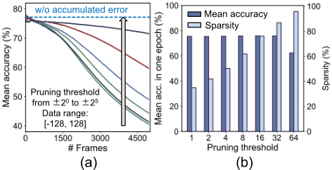
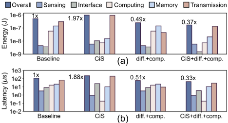
所提出架构在 STAG 数据集上的延迟与能耗分解如图 11 所示。我们还分析了传感内计算（CiS）与数据压缩（diff. + comp.）各自的贡献。由于在该场景下计算与数据传输的开销相当，仅执行传感内计算或仅执行数据压缩所带来的提升有限。而采用我们提出的架构，可以同时进行高效的数据处理与压缩，从而获得显著的性能提升。
基准对比：图 12 展示了近期传感内计算工作的基准对比结果。为了在摆脱不同任务和不同工艺影响的情况下进行公平比较，我们在同一薄膜工艺下使用我们的仿真器对这些工作进行评估。对于采用数据压缩算法的工作（[4, 13, 14]），我们考虑了额外的解码计算开销。对于具备传感内 NN 处理能力的工作（[8, 9]），采用与本文相同的首个神经网络（NN）层配置。数据通过对三个数据集 [27-29] 上的性能取平均获得。我们将开销分为两部分，即传输部分以及包括感知、计算和存储器读取在内的其他部分，以展示数据压缩与 NN 处理之间的权衡。基准对比结果表明，本工作在大面积智能感知场景中具有优势，这不仅得益于同时支持传感内处理与数据压缩，还得益于针对大面积应用所做的专门优化。
| Dataset.Dataset | Accuracy.SW | Accuracy.HW | Latency per frame ( 𝜇𝑠 ).baseline | Latency per frame ( 𝜇𝑠 ).CiS | Latency per frame ( 𝜇𝑠 ).CiS+diff. | Latency per frame ( 𝜇𝑠 ).CiS+diff.+comp. | Energy consumption per frame ( 𝜇𝐽 ).baseline | Energy consumption per frame ( 𝜇𝐽 ).CiS | Energy consumption per frame ( 𝜇𝐽 ).CiS+diff. | Energy consumption per frame ( 𝜇𝐽 ).CiS+diff.+comp. |
|---|---|---|---|---|---|---|---|---|---|---|
| STAG | 76.58% | 75.24% | 117 | 231 | 150 | 43.3 | 0.52 | 0.977 | 0.63 | 0.17 |
| HAART | 82.23% | 80.28% | 181 | 231 | 82.8 | 32.9 | 0.913 | 0.991 | 0.353 | 0.138 |
| UCF101 | 94.19% | 92.56% | 37000 | 22200 | 13800 | 11000 | 332.1 | 106.9 | 70.86 | 58.94 |
| Dataset.Dataset | Accuracy.SW | Accuracy.HW | Latency per frame ( 𝜇𝑠 ).baseline | Latency per frame ( 𝜇𝑠 ).CiS | Latency per frame ( 𝜇𝑠 ).CiS+diff. | Latency per frame ( 𝜇𝑠 ).CiS+diff.+comp. | Energy consumption per frame ( 𝜇𝐽 ).baseline | Energy consumption per frame ( 𝜇𝐽 ).CiS | Energy consumption per frame ( 𝜇𝐽 ).CiS+diff. | Energy consumption per frame ( 𝜇𝐽 ).CiS+diff.+comp. |
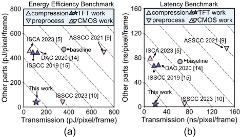
本工作提出了一种基于薄膜晶体管（TFT）的传感内计算架构，采用基于ROM的差分帧计算与数据压缩。通过芯片演示、电路级仿真与行为级评估所进行的跨层探索表明，该架构实现了3.85倍加速和5.10倍能效提升，证明了所提出架构的巨大潜力。这种传感器侧的优化还可进一步与其他高能效处理器集成，以获得更佳性能。随着大面积技术的发展，所提出的传感内计算架构有望在未来变得更加通用、快速且高能效。